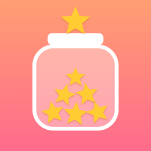

StarKeeper · 星星罐Privacy Policy
Effective October 26, 2026
Who we are
StarKeeper (星星罐) is a family reward app made by an independent developer ("we"). Contact: thinkofme.app+starkeeper@gmail.com.
What the app stores
- Children's names, avatars and colors that you enter.
- Reasons for stars, shop rewards (including any photo you pick for a reward), the stars given, redemptions and reward requests, and task timers.
- Your settings, such as the app language.
This information is stored on your device and synced through your own private iCloud database (Apple CloudKit), so it appears on your other devices signed in to the same Apple Account. It is never sent to us or to anyone else. Apple's handling of iCloud data is described in Apple's Privacy Policy.
We do not collect your name, email, location, contacts, advertising identifiers, usage analytics or crash data. The app contains no third-party SDKs.
Device features
- Notifications (timer reminders and reward requests) are scheduled locally on your device.
- Face ID / passcode is used only to let a parent leave Kids Display Mode. The check is done by iOS; the app never receives biometric data.
- Siri and Shortcuts requests are handled by Apple under Apple's privacy terms.
- Photos: if you choose a picture for a reward, only that picture is copied into the app.
Children
StarKeeper is designed for parents. Children may look at their star jars or ask for a reward in Kids Display Mode on a parent's device, but they do not create accounts and no information is collected from them. Information about a child, such as a first name, is entered by a parent and stays in the family's own iCloud.
Deleting your data
- Delete a child in Settings to remove that child and their history from all your devices.
- To remove everything, delete the app and then delete its iCloud data: Settings → [your name] → iCloud → Manage Account Storage → StarKeeper (星星罐) → Delete Data.
Changes
If this policy changes, we will update the effective date above.
隐私政策
生效日期：2026 年 10 月 26 日
我们是谁
星星罐（StarKeeper）是一款由独立开发者开发的家庭奖励 App。联系方式：thinkofme.app+starkeeper@gmail.com。
App 保存哪些内容
- 你输入的孩子名字、头像和颜色。
- 加分理由、商城奖品（包括你给奖品选的照片）、加星记录、兑换记录和孩子的兑换申请、计时任务。
- 你的设置，比如 App 语言。
这些内容存在你的设备上，并通过你自己的 iCloud 私有数据库（Apple CloudKit）在登录同一个 Apple 账户的设备之间同步，不会发送给我们或任何第三方。Apple 如何处理 iCloud 数据，见 Apple 隐私政策。
我们不收集你的姓名、邮箱、位置、通讯录、广告标识符、使用统计或崩溃数据。App 里没有任何第三方 SDK。
设备功能
- 通知（计时提醒、孩子的兑换申请）都是在你的设备上本地发出的。
- 面容 ID / 密码只用于家长退出孩子展示模式，由 iOS 完成验证，App 拿不到任何生物识别信息。
- Siri 和快捷指令由 Apple 按其隐私条款处理。
- 照片：你给奖品选照片时，只有选中的那一张会复制到 App 里。
关于孩子
星星罐是给家长用的。孩子可以在家长设备的孩子展示模式里看自己的星星罐、申请兑换奖励，但不需要创建账号，App 也不会从孩子那里收集任何信息。孩子的名字等信息由家长输入，只存在家庭自己的 iCloud 里。
删除数据
- 在设置里删除一个孩子，会在所有设备上删除这个孩子和他的全部记录。
- 想删除全部数据：先删除 App，再到 设置 → 你的名字 → iCloud → 管理账户储存空间 → 星星罐 → 删除数据。
政策变更
如果本政策有变化，我们会更新上面的生效日期。